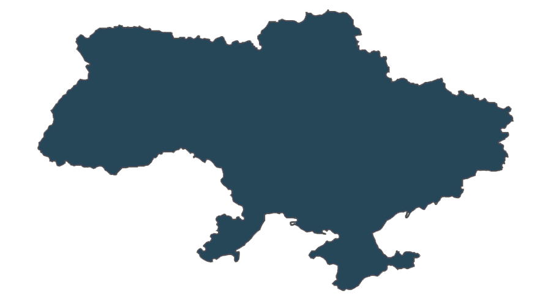

Оберіть свою мову:

Привіт, друже!
Ми раді бачити тебе на сторінках нашого веб-сайту! Сподіваємося, що ти знайдеш для себе якомога багато корисної інформації. Вдалого серфінгу!
Загальна інформація
Основним завданнями центру є сприяння розвитку демократичної освіти. «Центр освітніх технологій» організовує науково-практичні конференції, семінари, турніри та фестивалі міста та області.
За підтримки центру було організовано клуб для розвитку дітей та юнацтва «Аліса», студію розвитку творчості «Чудесна мить», філії центру у Вінницькій області (Калинівка).
Центр освітніх технологій займається інформаційно-видавничою діяльністю, співпрацює з міжнародними організаціями, сприяє поширенню інформації серед педагогів, тренерів та молоді про демократичну та громадянську освіту. Ми вивчаємо культурну спадщину українського народу та репрезентуємо матеріали на всеукраїнському та міжнародному рівнях. Здійснюємо співпрацю з управліннями освіти та культури, громадськими навчальними центрами для роботи з молоддю, організовуємо свята, конкурси, мітинги, приурочені до визначних дат.
На сьогодні наші викладачі готують випускників до здачі тестів ЗНО з усіх предметів. Тут можна отримати кваліфіковану консультацію з будь-яких питань, що стосуються навчальних програм, пробного тестування, посібників для підготовки до тестів ЗНО, реєстрації на сайті Центру оцінювання якості освіти, вибору вузу та подачі документів під час вступу.